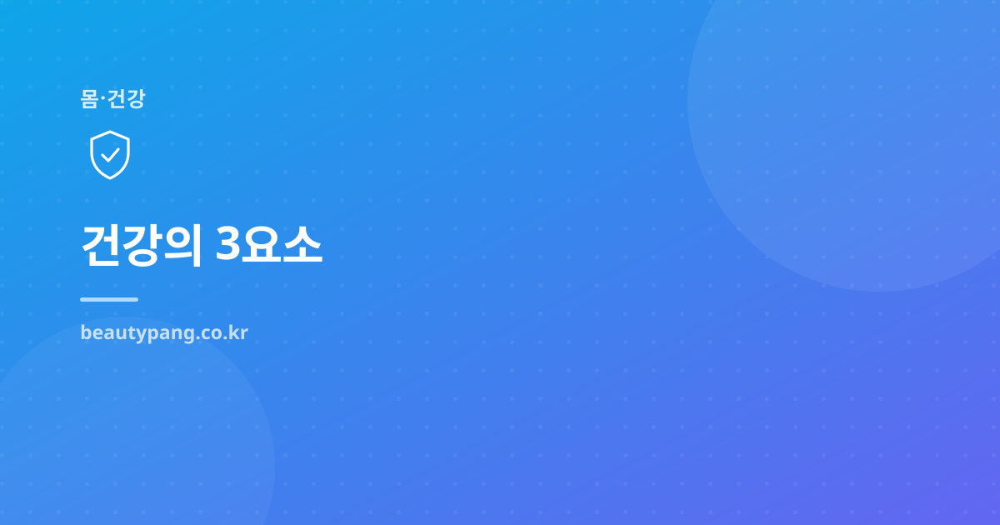

의학의 발달 등 여러 가지 이유로 120세 시대가 도래하였습니다. 이렇게 우리가 오래 살면서 무엇보다 중요하게 생각해야 하는 것은 바로 건강입니다. 아프면 본인 자신을 포함한 주변 사람들에게도 크나큰 고통입니다. 오늘은 건강수명 건강한 삶을 늘리기 위해 필요한 3대 요소에 대하여 알아보도록 하겠습니다.
운동은 사실 어떤 운동이던 내가 좋아하는 방식의 신체활동을 꾸준히 하면 운동의 효과를 볼 수 있습니다. 바디빌딩이나 휘트니스 선수등의 특수한 경우가 아니라면 무난히 신체적 움직임으로 충분할 수가 있다는 뜻입니다. 영양과 휴식은 좀 더 디테일 하게 세분화되고 필요한 부분에 각 영양소의 필요도가 다릅니다.
요즘 주변을 둘러보면 너무 나도 쉽게 모두가 영양과 휴식의 대한 비중보다는 운동의 비중을 훨씬 크게 보는 듯이 몇 시간씩 운동에 전념하는 모습을 볼 수 있습니다. 사람들은 이미 운동의 중요성을 이미 알고 있는 것으로 보입니다.
운동을 하면 바디라인이 좋아지고 바디라인 좋아지면 옷맵시가 좋아지게 됩니다. 옷맵시가 좋아지면 사람을 매력적으로 보이게 만드는데 사람이 매력적이면 연애도 사회생활도 잘하게 됩니다. 연애와 사회생활을 잘하면 사회적 지위와 가정에서도 좋은 위치에 있게 되고 사회적 지위가 높고 가정이 원만하면 행복의 만족도도 높고 건하게 됩니다. 결국 운동은 우리의 삶에 적지 않은 비중을 차지하게 되는 것입니다. 이외에도 운동으로 좋아지는 신체적, 가정적,사회적 효과는 많은 것 에서 찾아 볼 수 있습니다.
영양소를 골고루 섭취
건강에 도움이 된다고 알려진 식품만 반복해 먹는 것은 좋지 않습니다. 전문가들은 다양한 영양소를 골고루 먹는 것이 바람직한 식사법이라고 말하는데 고기나 채소만 먹는 등의 편협한 식사 역시 건강을 해칠 우려가 있다는 뜻입니다. 하지만 피해야 하는 음식도 있는데 바로 짠 음식이나 튀긴 음식, 탄 음식, 패스트푸드 같은 인스턴트 식품입니다. 짠 음식을 많이 먹어 나트륨을 과도하게 섭취하게 되면 몸에 부종이 생기거나 혈압이 높아질 수 있습니다.
우리나라 사람들은 소금으로 짠맛을 낸 김치찌개나 국 등을 자주 먹어 주의가 필요합니다. 튀긴 음식에는 콜레스테롤이 많아 심혈관질환의 위험을 높이며 생선이나 고기가 탈 때는 벤조피렌이라는 성분이 만들어지는데 이는 대표적인 발암물질입니다. 식사는 균형식이 무엇보다 중요하다는 것을 인지하여야 합니다.
세상에 많은 먹거리가 있지만 정작 우리 신체는 영양과잉으로 인한 결핍에 시달리는 시대에 살고 있다 해도 과언이 아닙니다. 바른 영양에 대한 이해와 제대로 된 식단으로 건강의 3요소 중 하나인 영양의 중요함을 인식할 때라고 봅니다.
충분한 휴식
하루에 대략 운동은 2~3시간, 식사 시간은 세끼를 기준으로 2~3시간이라고 합니다. 우리가 알고 있는 가장 큰 휴식인 수면을 보면 건강한 신체상태를 위해서 7~8시간을 권장하고 있습니다. 이것만 봐도 건강한 삶을 늘리기 위한 건강의 3요소 중 휴식이 가장 중요한 부분이란 것을 알 수 있습니다.
예를 들어 올림픽 선수가 전날 부부싸움을 해서 잠도 못자고 스트레스 지수가 높은 상태에서 과연 제대로 된 운동능력을 발휘할 수 있을까요? 갑자기 혈압이 높아진 사람에게 물어보면 대부분이 스트레스 때문입니다. 높아진 혈압 상태로 제대로 된 경기력을 낼 수 없다는 뜻입니다.
최근 우울증과 무기력증으로 신경정신과를 찾는 사람들이 많아졌다는 보도는 뉴스나 신문 등에서 자주 볼 수 있는데 입맛도 없어지고 무기력한데 운동을 할 수 없음은 물론이고 누구나 알듯이 스트레스는 만병의 근원입니다. 어떠한 방법이든 스트레스는 해소가 되어야 합니다. 이렇게 휴식은 심리적인 부분으로써도 신체적인 부분으로써도 건강의 3요소중 가장 중요도가 높다라고 생각할 수 있습니다.
결론적으로 말하자면 어떠한 운동이던 꾸준하게 하게 되면 입맛이 좋아지고 스트레스도 해소되며 잠까지 잘오게 됩니다. 또 영양소가 골고루 들어가 있는 음식을 잘 먹으면 운동능력이 향상되고 스트레스도 해소됩니다. 잠을 잘자고 충분한 휴식을 취하게 되면 피로회복이 잘되고 운동도 잘되며 입맛이 좋아집니다.
이 처럼 3가지 요소는 상호보완적이고 필요충분조건이기 때문에 이 중 한가지라도 빠진다면 절대적으로 안되는 요소들입니다. 3가지 요소를 잘 지켜서 건강수명을 늘려 건강한 삶을 살 수 있도록 하면 좋을 것입니다.
함께 보면 좋은 계산기